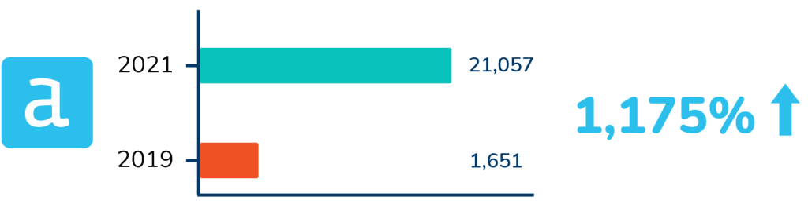
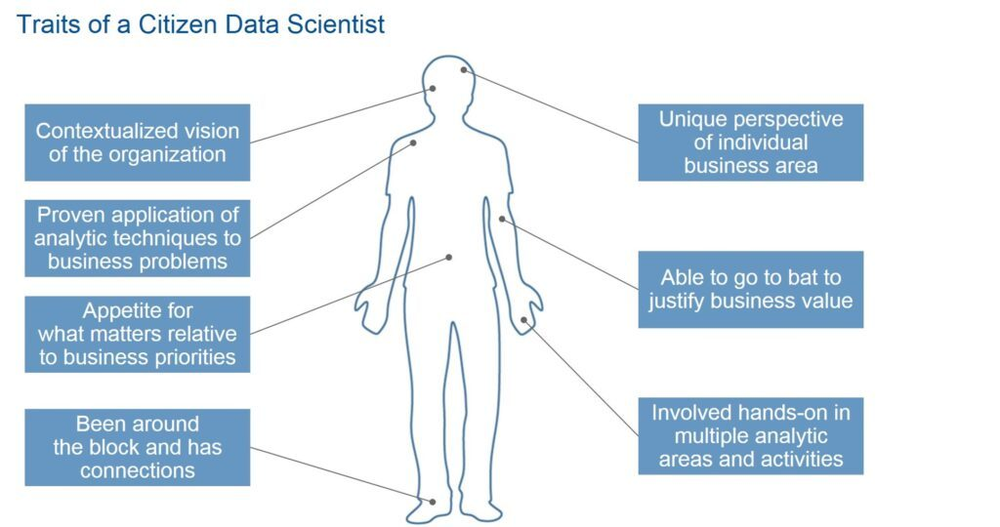

Businesses are becoming increasingly data driven and opting for tools such as Power BI and Tableau for data visualization instead of Excel which has significant volume limitations. Being able to compete in this data driven world is imperative for companies in 2022, but in order for this to happen, the right business intelligence tools must be adopted to help uncover the most valuable data insights. One of these tools is Alteryx.
What is Alteryx?
Alteryx allows users to quickly blend and manipulate data and is geared towards bringing advanced data analysis techniques to those who aren’t specialists in the field. It is a workflow tool which can automate manual tasks to improve business efficiency through simplifying data preparation and the ETL (extract, transform and load) process.
Alteryx also provides advanced statistical capabilities including spatial tools and predictive analytics. After transforming the data, it runs various advanced analyzes such as time series forecasting or predictive analytics to offer deeper data insights.
Although not as prevalent as tools such as Power BI and Tableau, there has been a significant jump in the adoption of Alteryx in recent years. Between 2019 and 2021, Alteryx course completions on Kubicle increased by 1,175%.

Why Should Companies Use Alteryx?
The rationale for companies to consider using Alteryx will invariably depend on different factors: existing processes and how they could be improved, who in the organization would benefit the most from using Alteryx, and the complexity of existing workflows and ability to alter them.
There are a multitude of reasons for businesses to consider using Alteryx internally, but we’ll cover 3 of the most compelling ones:
- Time Saved
- Ease of Use & Understanding
- Valuable Insights
Time Saved
Perhaps the most compelling reason to adopt Alteryx is the amount of time it can save the business: it’s been well documented that Data Analysts spend a huge portion of their working day on data preparation so implementing something that can significantly reduce this time will allow Analysts to focus their efforts elsewhere. In the case of Global Tax Management, Alteryx automated its client returns and filing data which resulted in a 50% reduction in manual processes.
Similarly, Siemens Gas & Power experienced difficulties in being able to effectively analyze unnecessary costs to its business operations. With several thousand measures to consider and over 5,000 data sets to analyze, the results were almost obsolete by the time they were available. After implementing Alteryx, repetitive tasks like manual updating of data was no longer necessary and employees could spend more time focusing on the actual data analysis.
Ease of Use & Understanding
The seamless integration and implementation of Alteryx within an organization is another reason why companies can benefit from it; its no-code and low-code data analytic solutions allow for easy setup and adoption, and it also allows anyone in the organization to access and work with data – Gartner coined the term ‘Citizen Data Scientist‘ which reflects this: “A Citizen Data Scientist is a person who creates or generates models that leverage predictive or prescriptive analytics but whose primary job function is outside of the field of statistics and analytics.”

This is especially true in the case of Gymshark – thanks to the low-code / no-code solutions available with Alteryx, there has been no requirement to recruit individuals that have specific knowledge of coding and data mining. “New hires come in and hit the ground running right away with Alteryx, even though they aren’t Data Analysts. We are able to create apps that empower our employees to be able to learn new skills using the Platform.”
Valuable Insights
Finally, the insights achieved with Alteryx offer a compelling reason for companies to adopt the software internally. In many cases, these insights would not be realized without using such a tool. This became a reality for Veritone, who noted a much richer analysis of broadcast advertising campaign spend after using Alteryx. Without it, the company would have struggled to effectively analyze the spend of its 250 ad campaigns. Similarly, McLaren Racing discovered that the fast combination and correlation of data sets in Alteryx allowed racers to focus on changes needed for overall performance improvement over the course of the racing season. Other tools would not have been able to provide this level of insight to the company.
In Summary
We have seen huge growth in the number of companies using Alteryx to get data driven insights for better informed decision making, improved skillsets and time and cost saving benefits – Kubicle is one of the only e-Learning companies to offer certified courses in Alteryx and Alteryx Intelligence Suite and currently trains companies such as PwC, KPMG and Deloitte on these subjects.
Alteryx on Kubicle
14 courses
166 lessons
3 Projects
Alteryx Intelligence Suite on Kubicle
2 courses
16 lessons
Topics Include: Data Manipulation | Predictive Analytics | Joining & Transforming Data | Spatial Data & Mapping | Application & Macros | Web Scraping | Computer Vision | Text Mining | Regression Analysis | Classification Models
We offer a 7 day trial to all learners. Sign up for free now!